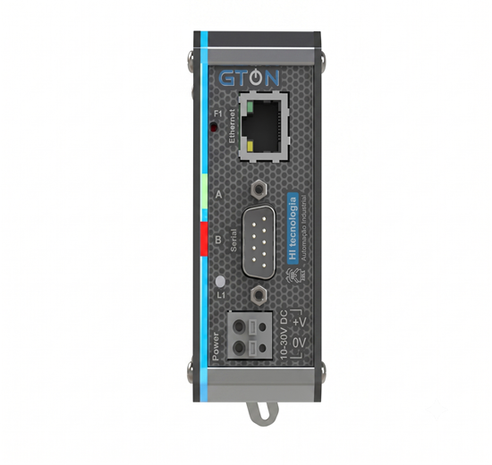

Programação de Formação HI Tecnologia
O GTON C-SET e o ESC717 são conversores e gateways da HI Tecnologia que integram equipamentos seriais a redes Ethernet e convertem protocolos Modbus-RTU e Modbus-TCP. Nessa etapa, você aprenderá sobre os modos Transparente e Bridge Modbus, utilizando ferramentas de simulação e teste como Modscan, Modsim e Hercules Utility. Não se esqueça de salvar os arquivos das aulas em pastas individuais para cada tema, na sua pasta localizada em: L:\GAdmn\DSuporte Tecnico\Minha Pasta.

Assista aos conteúdos sobre como trabalhar com Modscan e Modsim e instale os softwares em sua máquina. Você precisará utilizar estes softwares de simulação de mestre e escravo do protocolo Modbus para testes com o conversor.
Assista aos conteúdos sobre GTON C SET e ESC717 e reproduza no GTON C SET do Painel, através do Conteúdo Tutorial.
Assista aos vídeos sobre como testar todas as interfaces do GTON C e reproduza. Neste exercício testamos todos os modos de operação e interfaces de conexão do equipamento.